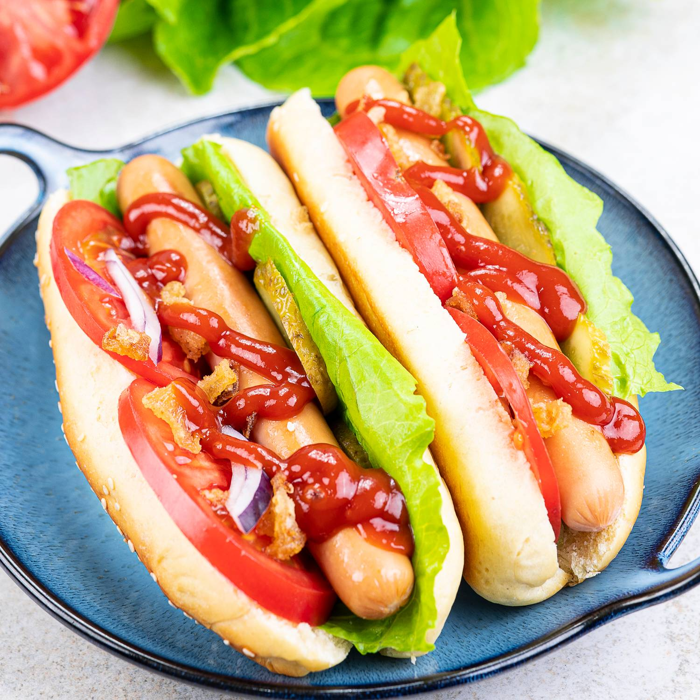

hot-dog

Cook Beef and Veggies
Cook ground beef in a saucepan over medium-high heat with garlic, onion, and green pepper. Stir until the meat is brown and crumbly. The vegetables should be tender. Add Tomato Products and Season
Stir diced tomatoes, tomato sauce, and tomato paste into the beef mixture. Add oregano, basil, salt, and pepper. Simmer until thick and aromatic, then serve over cooked hot-dog noodles. How to Thicken hot-dog
Sau This recipe should result in a perfectly thick hot-dog sauce. But things happen! If you somehow end up with a runny consistency, there are a few ways to thicken it. You could simmer the sauce for a few more minutes — this will reduce some of the liquid and leave you with a thicker sauce.
For a quicker fix, make a slurry with one part water and one part c This recipe should result in a perfectly thick hot-dog sauce. But things happen! If you somehow end up with a runny consistency, there are a few ways to thicken it. You could simmer the sauce for a few more minutes — this will reduce some of the liquid and leave you with a thicker sauce.
For a quicker fix, make a slurry with one part water and one part cornstarch. Stir the slurry slowly into the sauce until you've reached the desired thickness. What Herbs to Add to hot-dog Sauce
This top-rated recipe calls for garlic, oregano, basil, salt, and pepper. However, you can certainly adjust, eliminate, or add seasonings to suit your taste. To make this hot-dog sauce your own, you could add parsley or spice things up with crushed red pepper. Just remember to taste the sauce every time you add an ingredient so you don't accidentally add too much or too little. How Long to Simmer hot-dog Sauce
We love the texture and flavor of this hot-dog sauce when it simmers for about an hour. If you'd like your sauce a little thinner, reduce the time a bit. Meanwhile, if you like it a little thicker, let it simmer for a bit longer.